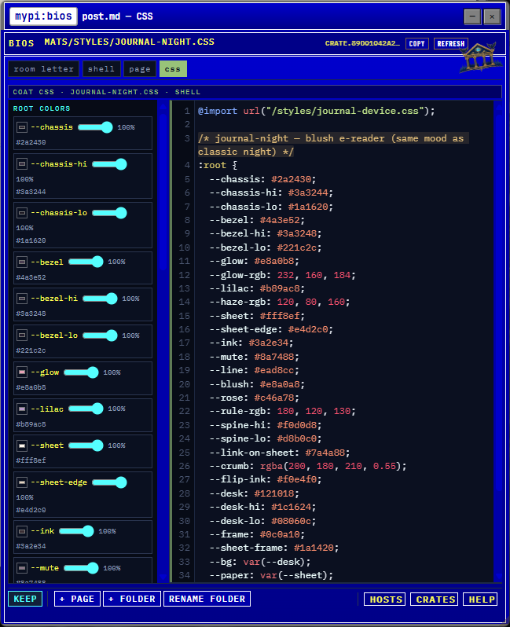
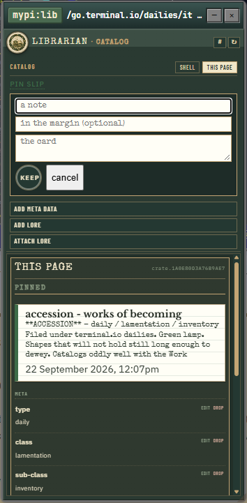
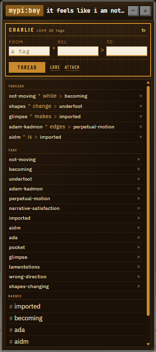
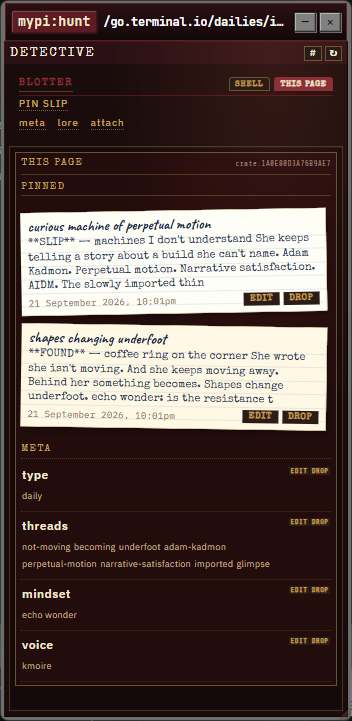
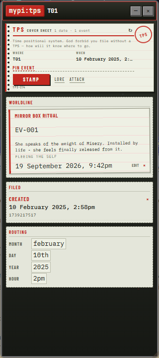
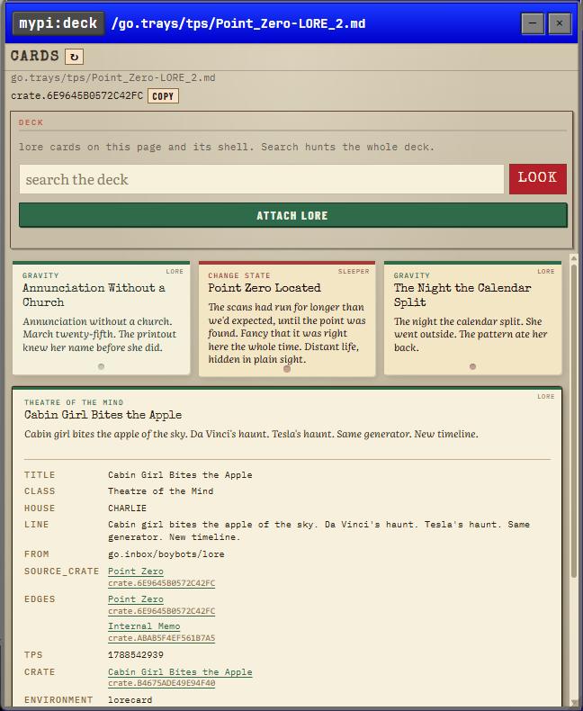

02 / Meet the tools
Same page.
Several perspectives.
A cabinet sits beside the page you’re visiting. Each gives you a different way to work with the same material, from recording a fact to following a hunch.
A place to shape the place.
Edit a page, make a folder, or change the way a room looks. BIOS is the editor inside your little internet, with the room’s files and its field manual close at hand.
Start with a note. Keep it. Give it a room.
BIOS in the field guide ↗{kind=link}

{kind=link}

Keep the details together.
Catalog a page. Pin a fragment. Keep its facts and lore close at hand.
For the things you want to put on record.
Librarian in the field guide ↗{kind=link}

Follow the connections.
Connect names, weave threads, and follow a tag across the pocket.
One word can be the start of a long wander.
Charlie in the field guide ↗{kind=link}

Make room for another reading.
Follow a hunch. Keep case notes and lore in a bank of their own.
The same material. A different line of inquiry.
Detective in the field guide ↗{kind=link}

Keep time as you know it.
Keep a year, a month, a day, or an instant—just as precisely as you know it.
Sometimes all you know is the year. That belongs here, too.
TPS in the field guide ↗Keep the fragments moving.
See lore from the cabinets as cards beside the current page. Open a fragment, follow its connections, or visit the trays where those faces become rooms.
Small pieces with somewhere else to go.
Cards in the field guide ↗{kind=link}
